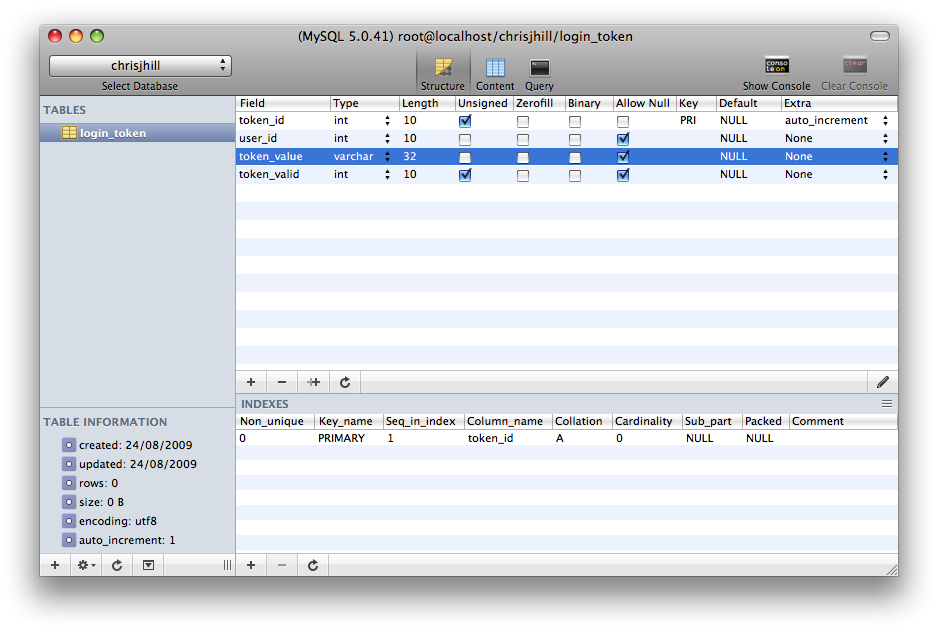

This is an old post from 2009. As such, it might not be relevant anymore.
Following on my previous security article on Defensive Programming I’ll be talking you through and providing a sample class to protect against replay attacks. Internet security is not one to be taken lightly. There is a saying that Internet Security is a trade-off between security and usability. And that’s true for the most part, but luckily protection against replay attacks does not hinder usability—it’s almost completely transparent to the end users.
So let’s jump straight in, what is a replay attack? Essentially a security breach whereby someone poses as someone else using some unique piece of data the user supplied/was issued to/from the Web server. It’s kind of similar to a man-in-the-middle attack. We’re going to be looking at the attack using specifically cookie authorisation, a very common means of implementing a “remember me” function.
Replay attacks are often one thing that programmers forget to protect against. This really is quite a worry since I want my identity to be safe online and I’m sure you do, too. Let’s look at the problem in a readable form:
Due to the very nature of the attack it isn’t possible to 100% protect against it, it’s inherently insecure. But there are ways to increase the security, and that’s to add another step after (3) above:
It’s called token regeneration. We have recognised that John has a valid cookie, logged the user in, removed their old cookie and recreate a new one that no one else should know. Even if Joe had the old cookie it’s no longer valid and has to perform the same actions as (4) in the original way.
Another method is to add some kind of time restriction, so only make the cookie valid for a certain amount of days. So if Joe happens to stumble across the cookie after a month he should no longer be able to login as John. Another to add in which browser John is using, the chances of John using exactly the same as Joe is unlikely. But again it is possible, so don’t rely on it!
Firstly we will need another table into our database (I’m going to assume you have a semi-advanced knowledge of databases and PHP), I’ll call it login_token.

With that in place, let’s create a couple of small PHP class to do the remembering. I’ll start with a nice cookie class
so our remembering function is a little neater (Remember, we want high cohesion and low coupling!).
<?php
class Cookie
{
/**
* Sets a cookie via pre-set parameters.
*
* $expires is the number of days to keep the cookie alive.
*
* @static
* @param string $name
* @param string $value
* @param integer $expires
*/
public static function save($name, $value, $expires) {
setcookie($name, $value, ($expires * (3600 * 24)), '/', false);
}
/**
* Returns a cookie through the name
*
* @static
* @param string $name
*/
public static function get($name) {
return isset($_COOKIE[$name])
? $_COOKIE[$name]
: '';
}
/**
* Deletes the cookie.
*
* @static
* @param string $name
*/
public static function delete($name) {
setcookie($name, '', (time() - 3600));
}
}
Now we’ll create our actual remembering class:
<?php
class RememberMe
{
/**
* See if the user has a login for this site.
*
* <ul>
* <li>Does the auth cookie look correct?</li>
* <li>Can we find the auth cookie in the datbase?</li>
* </ul>
*
* @param $cookieValue string
* @return boolean
*/
public function attemptRememberMeLogin($cookieValue) {
// Does it have a correct MD5 hash length?
if (strlen($cookieValue) == 32) {
// Does the cookie exist in the database?
$query = mysql_query("
SELECT `user_id`
FROM `login_token`
WHERE `login_value` = '" . mysql_real_escape_string($cookieValue) . "'
LIMIT 1
");
// Cookie found?
if (mysql_num_rows($query) >= 1) {
// Get the data
$data = mysql_fetch_assoc($query);
// Reset the cookie
$this->remember($data['user_id']);
// Yes, we have managed to log the user in
return true;
}
}
// User has a cookie, but it is invalid
Cookie::delete('auth');
return false;
}
/**
* Set the remember me cookie.
*
* <ul>
* <li>Firstly remove all the past cookies they may have had.</li>
* <li>Generate the new MD5 cookie.</li>
* <li>Create the cookie on users computer.</li>
* <li>Insert the cookie into the database.</li>
* </ul>
*
* @param int $userId
*/
public function remember($userId) {
// Remove the old cookies
// Client cookie
Cookie::delete('auth');
// Database cookie
mysql_query("
DELETE FROM `login_token`
WHERE `user_id` = " . (int)$userId . "
");
// Create the new cookies
// Client cookie
$cookie = md5($userId . $_SERVER['REQUEST_TIME']);
Cookie::save('auth', $cookie, 7);
// Database cookie
mysql_query("
INSERT INTO `login_token`
(`user_id`, `token_value`, `token_valid`)
VALUES
( " . (int)$userId . ",
'" . mysql_real_escape_string($cookie) . "',
" . ($_SERVER['REQUEST_TIME'] + (7 * (3600 * 24))) . "
)
");
}
}
And there we go. We have successfully written an almost secure way to implement a “remember me” function. Of course you can take this further by adding even more security, such as: